La vidéo de Pursuing AI explore une avancée majeure dans la création de contenu assistée par l'intelligence artificielle : la conception et l'exploration interactive d'un monde ouvert entier à partir d'une simple idée textuelle. Délaissant les approches traditionnelles cloisonnées — où l'écriture, la génération d'images et la mise en scène vidéo nécessitent des logiciels multiples —, le créateur utilise ici un espace de travail unifié pour bâtir un univers criminel fictif inspiré de la Floride moderne et de l'esthétique de GTA 6. Cette méthode permet de structurer un écosystème narratif cohérent comprenant des personnages principaux et secondaires, des factions rivales, des entreprises et des intrigues interconnectées, le tout générant automatiquement des dizaines de cartes thématiques interdépendantes.
La technique innovante repose sur la transition fluide entre la conception textuelle et la visualisation spatiale. Le créateur ne se contente pas de stocker des fiches descriptives ; il exploite une fonctionnalité de carte globale pour cartographier l'interconnexion géographique et narrative des différentes régions (telles que Dora Luna ou Cielo Beach). Cette vue d'ensemble garantit la cohérence du lore avant de passer à l'étape suivante : l'immersion visuelle. Grâce à des flux de travail dédiés, le monde ainsi théorisé prend vie à travers des séquences vidéo en vue subjective (POV) à la première personne, permettant littéralement de pénétrer à l'intérieur de l'univers généré.
Pour les créateurs de vidéo et les concepteurs de mondes virtuels, ce workflow représente un gain de temps considérable et un changement de paradigme. Plutôt que de produire des images isolées ou des clips déconnectés, l'IA devient un moteur de worldbuilding persistant où chaque élément (personnage, lieu, faction) nourrit et contextualise les générations futures. Cette approche ouvre la voie à une pré-production ultra-rapide pour des récits fictionnels, des concepts de jeux vidéo ou des productions machinima, où la cohérence de l'univers et l'immersion visuelle se construisent de manière itérative au sein d'une seule et même interface.
Avez-vous déjà imaginé créer votre propre monde ? Un royaume fantastique ? Une ville pleine de secrets ? Ou un monde ouvert entier à la GTA avec ses propres personnages, lieux et histoires ? Eh bien, vous pouvez créer quelque chose comme ça avec l'IA. Mais traditionnellement, vous auriez besoin de différents outils pour écrire l'histoire, générer des visuels et donner vie à ce monde. Mais et si vous pouviez construire votre monde et y pénétrer réellement en utilisant un seul espace de travail basé sur l'IA ? C'est ce que nous allons explorer aujourd'hui en utilisant Netta Studio. Je vais prendre mon idée d'un monde ouvert inspiré de GTA 6 et voir jusqu'où je peux le développer.
Interface & Outils : Interface du site web Netta Studio (neta.art) affichée dans un navigateur Chrome, avec des onglets "Explore", "Blog", "Changelog" et un bouton "Get started".
Contenu textuel & Code : Le texte principal sur la page d'accueil est « A world of things to explore. » Accompagné d'une grille de nombreuses vignettes d'illustrations de mondes fantastiques et urbains.
Action / Démonstration : Démonstration visuelle de différents mondes générés par IA suivie de la présentation de l'interface de la plateforme Netta Studio.
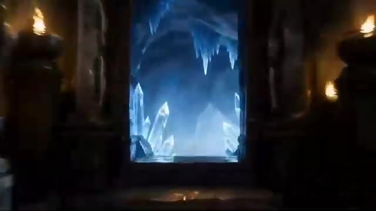
🔍 Agrandir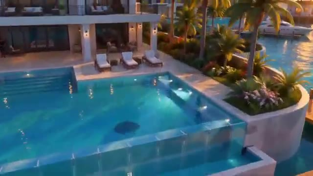
🔍 Agrandir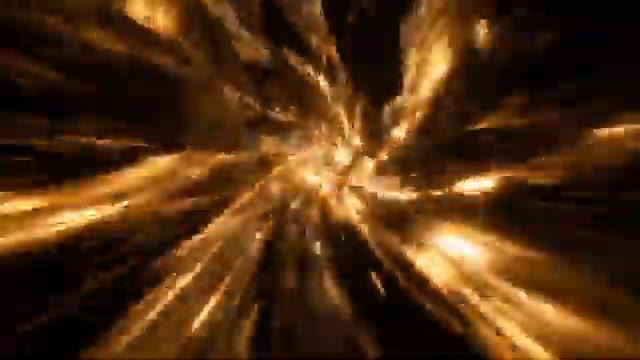
🔍 Agrandir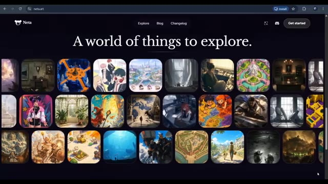
🔍 AgrandirC'est Pursuing AI, et vous regardez le rapport de recherche. J'ai ouvert Netta Studio, et c'est la première chose que vous voyez. L'idée derrière tout ça est assez simple. Vous commencez avec une idée, puis vous construisez progressivement un monde entier autour d'elle. Au lieu de simplement générer une histoire ou une image, vous pouvez développer des personnages, des lieux, des factions et du lore, puis utiliser ces éléments pour développer encore plus votre monde. Et plutôt que de simplement regarder ce que d'autres ont créé, je voulais voir ce qui se passerait si je construisais mon propre monde à partir de zéro. Commençons donc. J'ai commencé par un concept simple, un jeu de crime en monde ouvert fictif inspiré par l'atmosphère de la Floride moderne.
Interface & Outils : Netta Studio (netta.art) et interface de génération vidéo ou de création de mondes virtuels.
Contenu textuel & Code : URL de Netta Studio : netta.art/world/world_01M40... ; texte principal : "Coral Vice" et "Doraluna is a city that sells sunshine and forgives everything else..."; dans le panneau latéral : commandes textuelles ("Fan-Made GTA 6-Style Open-World Crime Ga...", "Load narrating-v2 skill", "Read world phase", etc.).
Action / Démonstration : Le créateur navigue à travers différentes interfaces de génération de mondes (vidéos cinématiques et plateforme Netta Studio).
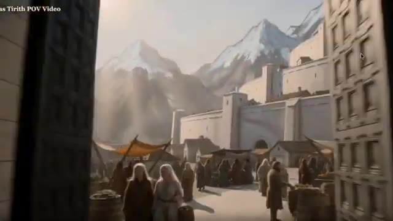
🔍 Agrandir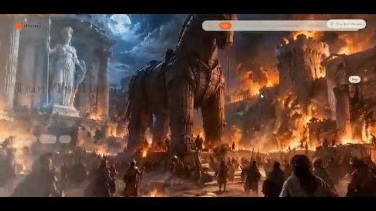
🔍 Agrandir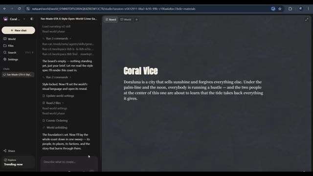
🔍 AgrandirNous avons nos personnages principaux, Ren et Diaz, ainsi que plusieurs personnages secondaires, et autour d'eux, Netta a commencé à construire les lieux. Nous avons des endroits comme Dora Luna, Cielo Beach, et plusieurs autres zones, mais un monde a besoin de plus que des personnages et des lieux. Il a besoin d'une histoire qui relie le tout. Netta a donc également développé des organisations criminelles, des forces de l'ordre, des factions rivales et les conflits entre elles. Elle a même commencé à relier ces éléments au scénario principal. Et après la génération initiale, nous avions 47 cartes représentant différentes parties de notre monde. Celles-ci comprenaient des personnages, des lieux, des factions, des entreprises,
Interface & Outils : Application web Netta (neta.art) utilisée pour la génération et l'organisation d'univers de jeux de type GTA 6.
Contenu textuel & Code : Menus et cartes textuelles interactives représentant les personnages ('Ren', 'Diaz'), les lieux ('Dora Luna', 'Cielo Beach', 'Sabrocosta'), les factions et l'histoire en quatre actes, ainsi que le panneau latéral 'World Wiki' indiquant '47 entries'.
Action / Démonstration : Le créateur navigue à travers l'interface de l'application Netta pour montrer les différentes catégories de cartes générées (personnages, lieux, factions, histoire) qui constituent le monde virtuel.
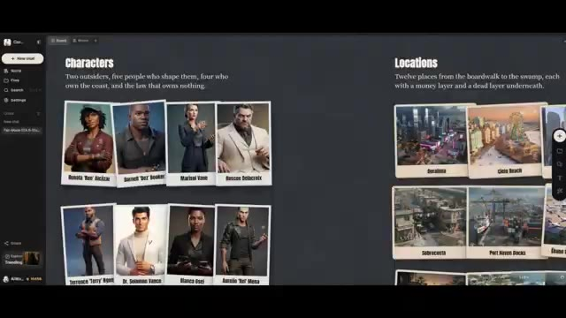
🔍 Agrandir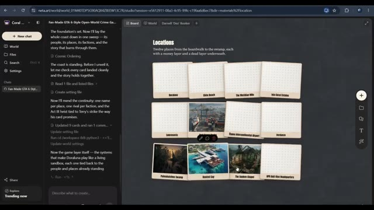
🔍 Agrandir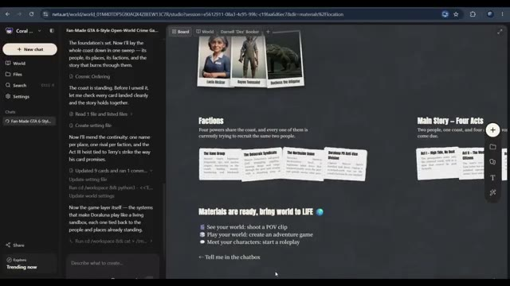
🔍 Agrandir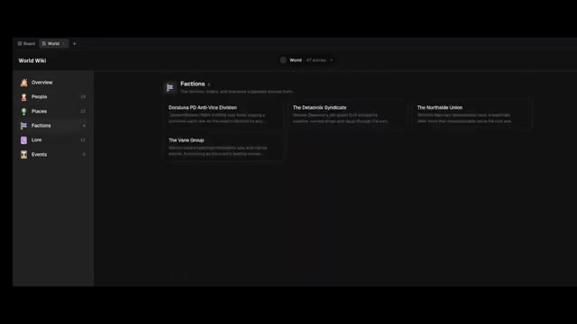
🔍 Agrandirdes missions, et d'autres éléments. Mais maintenant je voulais explorer quelque chose de plus intéressant. À quoi ressemble réellement ce monde lorsque nous rassemblons toutes ses pièces ? J'ai donc exploré ensuite la fonctionnalité de carte du monde de Netta. Au lieu de regarder les cartes de localisation individuelles une par une, je voulais voir le monde dans son ensemble. Et voilà. Maintenant, nous pouvons voir les différentes régions et emplacements disposés ensemble, ce qui nous donne une image beaucoup plus claire du monde que nous avons construit. C'est particulièrement utile pour un monde comme le nôtre, où nous avons de multiples emplacements, différents groupes, et une histoire qui les relie. Parce que lorsque vous créez un concept de monde ouvert, ce n'est pas seulement
Interface & Outils : Application Netta Art (interface de création de monde ouvert / wiki / cartographie interactive).
Contenu textuel & Code : Textes visibles : 'World Wiki', 'Factions', 'Lore', 'Fan-Made GTA 6-Style Open-World Crime Game Concept', descriptions de factions (Doraluna PD Anti-Vice Division, The Delacroix Syndicate), et 'The Meridian Mile'.
Action / Démonstration : Le créateur navigue à travers les différentes sections du wiki du monde, puis présente la carte globale interactive et zoome sur un quartier spécifique.
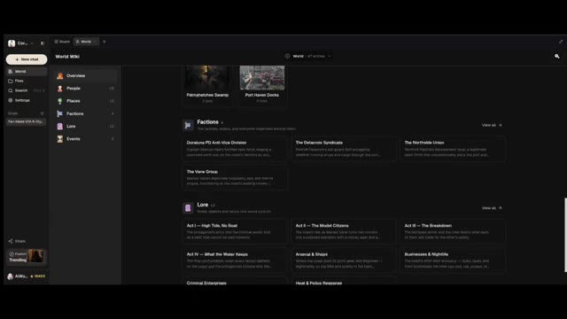
🔍 Agrandir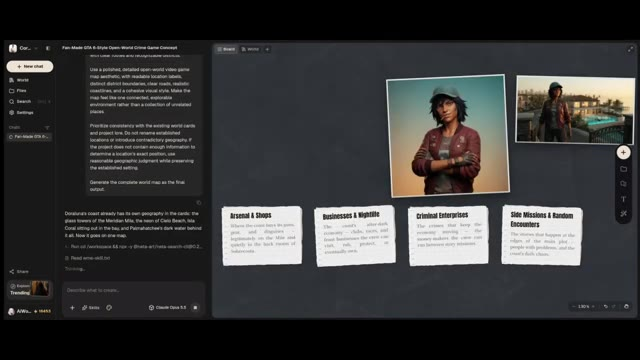
🔍 Agrandir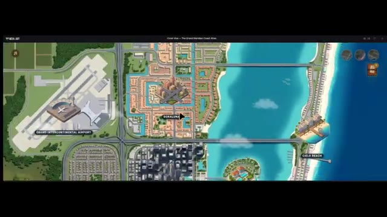
🔍 Agrandir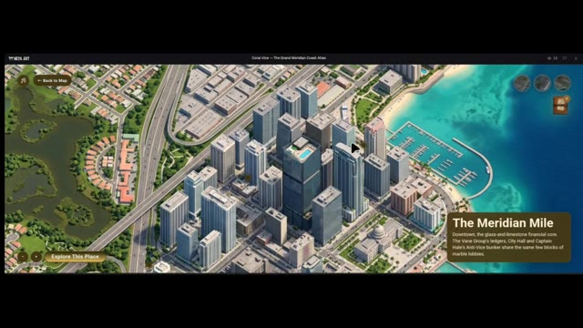
🔍 Agrandirà propos d'inventer des endroits individuels. Il s'agit de comprendre comment ces endroits s'intègrent dans l'univers plus vaste. Et maintenant que nous avons une meilleure image de notre monde, je veux aller un peu plus loin. Et si nous pouvions réellement faire l'expérience de ce monde de l'intérieur ? C'est là que les choses deviennent particulièrement intéressantes. Jusqu'à présent, nous avons principalement observé notre monde de l'extérieur.
Interface & Outils : Application web interactive de cartographie et d'exploration de monde virtuel (interface style atlas interactif avec zoom et points d'intérêt cliquables).
Contenu textuel & Code : Noms des lieux affichés : "Coral Vice - The Grand Meridian Coast Atlas", "The Meridian Mile", "Isla Coral Estates", "Eband Intercontinental Airport", "Doraluna", "Cielo Beach". Description textuelle d'Isla Coral Estates : "A gated island in the bay built on dredged fill, with villas, private docks and the coast's donor money..." Boutons interactifs comme "Back to Map" et "Explore This Place".
Action / Démonstration : Navigation et zoom à travers la carte interactive d'un monde virtuel pour explorer différents quartiers et lieux spécifiques.
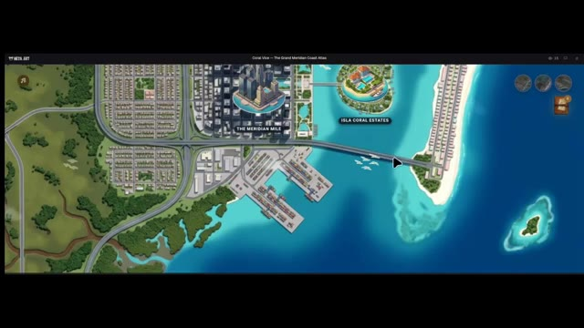
🔍 Agrandir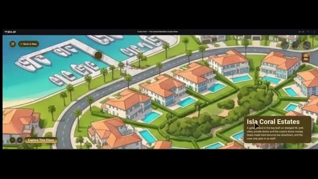
🔍 Agrandir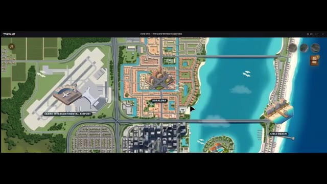
🔍 AgrandirMais et si nous pouvions réellement nous y déplacer ? Je voulais voir si Netta pouvait créer une vidéo en vue subjective (POV) à la première personne qui nous plonge à l'intérieur du monde que nous avons construit. J'ai donc exploré le flux de travail de la vidéo POV et j'ai utilisé notre monde comme point de départ. Et maintenant, jetons un œil au résultat.
Interface & Outils : Interface de type tableau de bord interactif combinant un assistant textuel et une vue de gestion de projet visuelle (Board/Canvas) avec des assets de personnages et de décors.
Contenu textuel & Code : Texte du prompt et de l'historique de chat visible sur l'interface (mentionnant "Fan-Made GTA 6-Style Open-World Game Concept", "Wrong Car, Right Night", "Next POV: The Knock") ainsi que des vignettes de personnages ("Characters") et de lieux ("Locations").
Action / Démonstration : Démonstration visuelle des rendus vidéo générés par l'IA et de l'interface de travail utilisée pour orchestrer le workflow de création du monde virtuel.
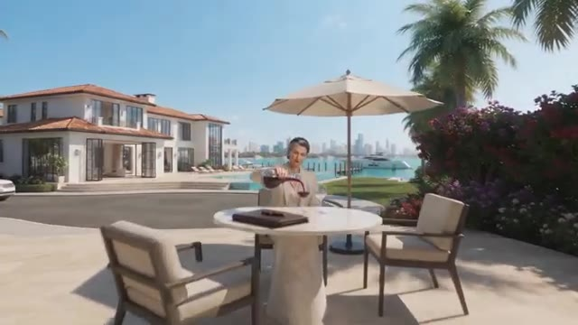
🔍 Agrandir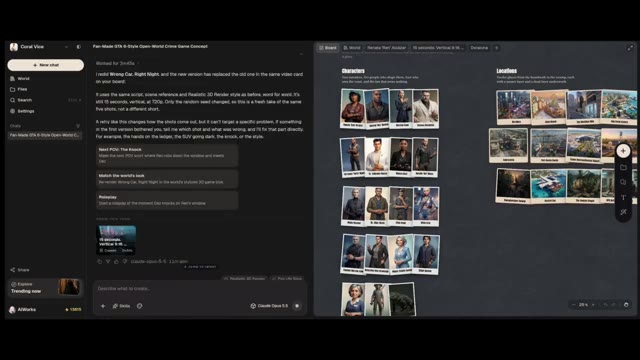
🔍 Agrandir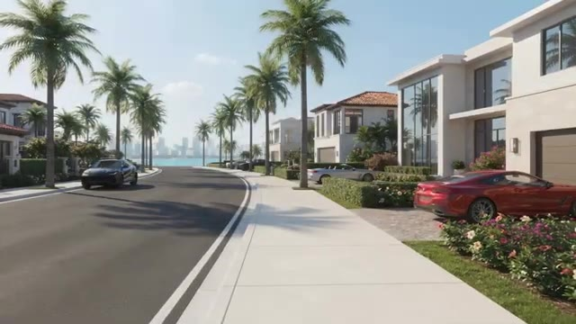
🔍 Agrandir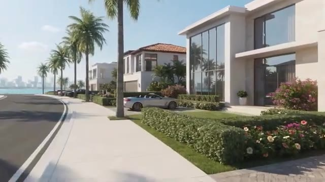
🔍 AgrandirEnsuite, je voulais explorer la génération de compétences WorldBox, et cela nous donne une autre façon d'explorer le processus de construction de monde à l'intérieur de Netta Studio. La partie intéressante de cette expérience est que nous ne traitons pas chaque création comme un projet complètement séparé. Nous continuons à travailler avec un monde que nous avons déjà établi, et c'est ce qui rend cela intéressant pour moi.
Interface & Outils : Netta Studio (interface web interactive de création de mondes par IA).
Contenu textuel & Code : Menus de compétences ("Skills", "World Box"), panneau de discussion latéral, texte descriptif de l'univers "Characters" (Two outsiders, five people who shape them...), et rendu 3D cinématique d'une rue côtière.
Action / Démonstration : Navigation dans l'interface de Netta Studio pour sélectionner une compétence de génération ("WorldBox") et visualisation d'un rendu 3D du monde créé.
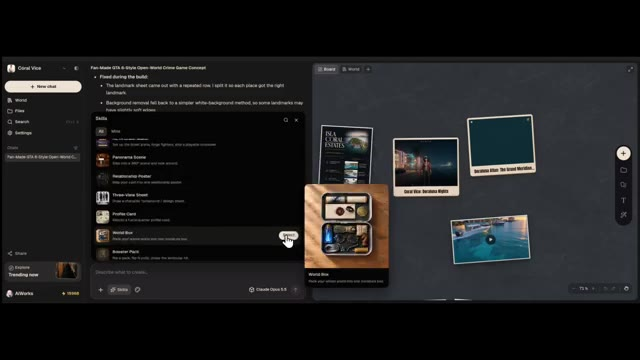
🔍 Agrandir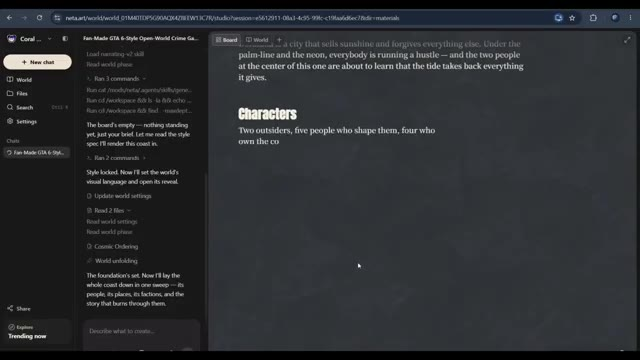
🔍 Agrandir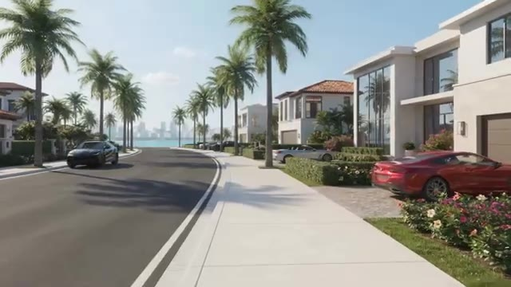
🔍 AgrandirCe n'est pas seulement générer une seule image ou écrire une histoire. Il s'agit de développer un monde et de trouver différentes façons de donner vie à ce monde. Bien sûr, les résultats dépendent de vos invites et de ce que vous essayez de créer, il y a donc toujours de la place pour expérimenter et affiner les choses. Mais si vous avez toujours voulu construire votre propre univers fictif, Netta Studio vaut le détour.
Interface & Outils : Navigateur web affichant la plateforme Netta Studio (neta.art) ainsi que des clips vidéo de démonstration générés par IA.
Contenu textuel & Code : URL "neta.art", texte "A world of things to explore", menus de navigation (Explore, Blog, Changelog, Get started) et grille de nombreuses vignettes d'images et de mondes virtuels.
Action / Démonstration : Présentation visuelle d'un univers généré par IA avec un mouvement de caméra (travelling) dans un quartier résidentiel, suivie d'une transition montrant l'interface du site web Netta.art.
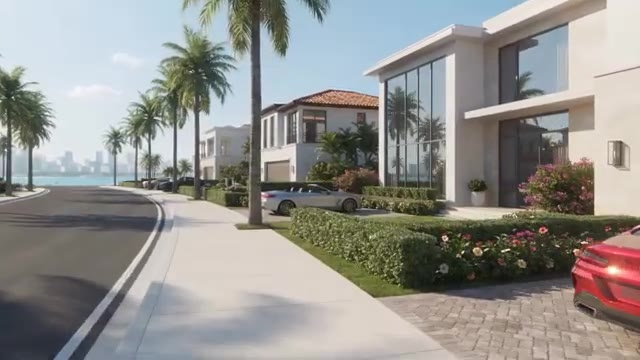
🔍 Agrandir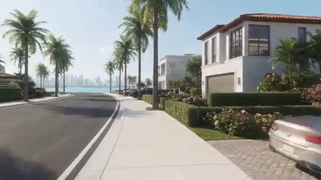
🔍 Agrandir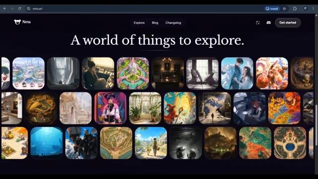
🔍 AgrandirJ'ai mis le lien dans la description, ainsi que le lien de la communauté Netta Studio.
Interface & Outils : Navigateur web affichant le site web Netta Studio (neta.art).
Contenu textuel & Code : En-tête avec le logo "Neta", les onglets de navigation "Explore", "Blog", "Changelog", un bouton pour Discord et un bouton "Get started". Le slogan principal affiché au centre est "A world of things to explore." avec une grille d'illustrations artistiques et variées en dessous.
Action / Démonstration : Navigation et présentation de la page d'accueil de la plateforme Netta Studio sur le navigateur web.
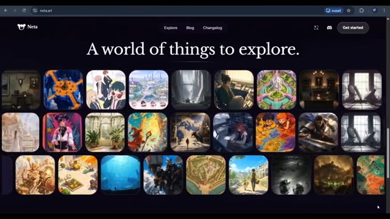
🔍 Agrandir